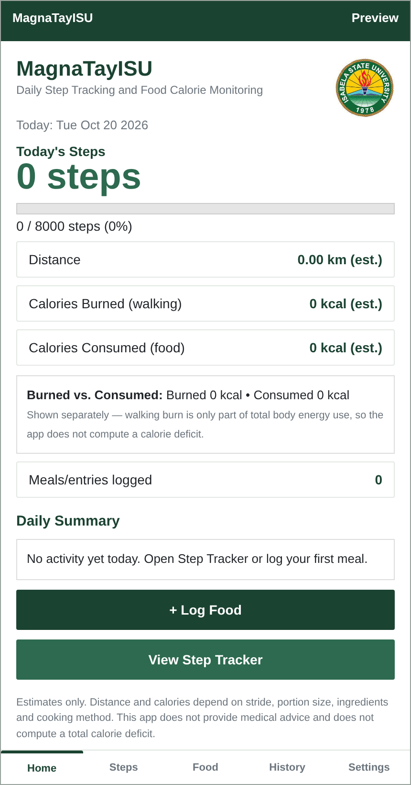

01
Review daily movement
See the step count, personal goal, progress, estimated distance, and estimated walking calories on the Dashboard.
The stock Pedometer is foreground-oriented. Keep the Step Tracker open while using the stock version.
A student-built Android project
MagnaTayISU brings daily walking records and food entries into one simple view. Check a personal step goal, log a meal from an offline Filipino food list, and review saved history by date.
Test-signed demo build. Physical-device verification is pending; this is not a Google Play release.

A daily record
Walking steps, a personal goal, and date-based history.
An offline starter list
18 food entries with serving-based calorie estimates.
Estimates, clearly labeled
Food calories and walking calories remain separate.
01 / FEATURES
Use the app to keep simple personal records. Its food list and basic calculations are designed to work offline; all displayed calorie and distance values are estimates.
01
See the step count, personal goal, progress, estimated distance, and estimated walking calories on the Dashboard.
The stock Pedometer is foreground-oriented. Keep the Step Tracker open while using the stock version.
02
Search the local starter-food list, choose a meal, enter servings, and review the estimated food calories before saving.
A simple example: 200 kcal per cup of cooked white rice × 2 servings = an estimated 400 kcal.
03
Review steps and meal records for a selected date, with a simple summary of recent walking activity.
Records are stored locally on the device; clearing app data or uninstalling may remove them.
04
Adjust the step goal and stride length, with an optional weight setting used by the walking estimate.
Values are personal inputs, not health guidance or a medical recommendation.
02 / APP SHOWCASE
Choose a thumbnail, use the Previous and Next controls, or swipe left and right on a touch screen. Select the large image to open it. These are HTML simulation previews, not captures from an installed Android app.
01 / 05 · HTML PREVIEW
An empty-state Dashboard preview with step, goal, distance, and food summaries.
Keyboard: focus the preview and use the left or right arrow keys. On a phone, swipe across the image.
03 / INTERACTIVE WEB DEMO
Choose an item from the starter list and change the serving amount to see the arithmetic. This small web demo is separate from the Android app.
1 cup cooked (about 158g) · 200 kcal per serving
Enter a positive amount, such as 1, 1.5, or 2.
Estimated food calories
200 kcal
200 kcal per serving × 1 serving
04 / FAQ
Details about the app's current behavior, estimates, and test status.
The stock MIT App Inventor Pedometer is foreground-oriented. Do not assume it reliably counts in the background or after the app is closed. A separate Itoo project is available, but background behavior still needs an installed build and physical-device testing.
No. They are estimates. Step readings, stride length, body inputs, ingredients, cooking methods, and serving sizes can affect the values.
The starter food list and basic food calculations are designed to work offline. The app stores records locally and does not provide account-based cloud syncing.
No. The gallery images are clearly labeled HTML simulation previews. They show the interface design and sample empty states, not live sensor readings or captures from an installed app.
No. Food calories consumed and estimated walking calories burned are kept separate. The app does not calculate a calorie deficit or provide medical or nutrition advice.
No. MagnaTayISU is a student project. The project name and student-created materials do not indicate official university sponsorship, approval, or endorsement.
No. The downloadable APK is a test-signed demonstration sideload build derived from the supplied AAB. It is not signed with a production release key and has not been verified on a physical phone. The AAB link is included below for reference; an AAB is not a tap-to-install APK.
05 / DOCUMENTATION & SUPPORT
Download the report, project notes, source projects, and test checklist. The PRD and TRD are included in the full project report.
PROJECT REPORT
Project requirements, technical design, limitations, testing status, and supporting materials.
PROPOSAL
Project proposal in PDF format.
BUILD & TEST
Implementation notes, project limitations, and manual test cases. Physical step testing is still required.
APP INVENTOR SOURCE
The background-service AIA is a separate source project; compiling and testing it on a phone is still required.
DATA & DISTRIBUTION
CSV starter-food database. The supplied Google Drive file is an AAB, not an installable APK.